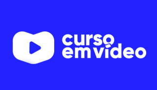
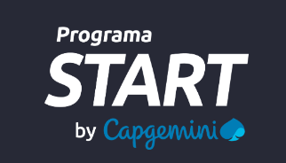

Curso em vídeo

Criado pelo professor Gustavo Guanabara, o Curso em Vídeo trata-se de um projeto de ensino gratuito de diversas linguagens de programação disponibilizadas tanto na plataforma Youtube quanto no site Curso em Vídeo.
Curso Web Moderno

Criado por Leonardo Moura Leitão e Cod3r Cursos Online, o curso web moderno refere-se a um conjunto de aulas pagas de web ensinando desde a teoria até projetos práticos utilizando html, css, javascript, angular, node, react e etc.
Curso Capgemini

Criado pela Capgemini, o programa Start é um curso gratuito em que se escolhe uma trilha nas principais plataformas sendo elas Java, SalesForce, ServiceNow e Cloud. Há ainda uma possibilidade de contratação ao final do treinamento.